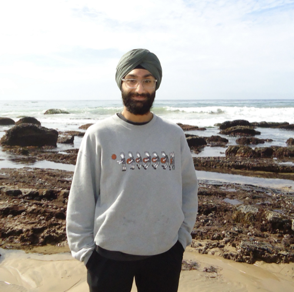

Hi I'm Tejus Singh
Researcher, student, and engineer.
MS CS at UC San Diego, BS Applied Physics at UC Irvine
Hi I'm Tejus, welcome to my site.
About me
- Completing my Master's in CS at UC San Diego, specializing in Artificial Intelligence.
- Research user-LLM representational alignment to enable LLMs to be extension of your own mind.
- Passions lie in research-driven, open-ended problems in model behavior, applied ML, computational modeling.
Currently:
- Conducting research on representational alignment between human and LLMs. Learn more about my research here.
Previously:
-
Quantitative Research Intern @ Evovest - Time-series Diffusion models for equities forecasting.
- Altered noise schedules, sampling distributions, and CFG to enable model to learn useful signal from extremely low SNR data.
- Demonstrated a significant improvement in the learned correlation structure and uncertainty forecasts.
- Quantified which part of the signal can only be captured by diffusion, compared with other transformer and neural network architectures.
-
Worked on an implementation of a quantized transformer on FPGA for low latency, at UCSD.
- Model classified short-lived particle streams generated by the Large Hadron Collider.
- Accuracy-preserving quantization and fast inference were a focus.
-
Researched physics-informed deep learning methods for volumetric medical imaging at UCI.
- Work accepted by the International Journal of Cardiovascular Imaging.